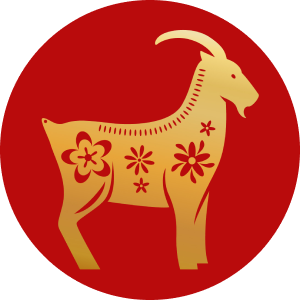

esplora l'astrologia cinese.
ASTROLOGIA CINESE
Nell'astrologia cinese il segno dell'anno identifica come sei percepito; poi in base al mese, al giorno e all'ora si identificano rispettivamente il segno interno, vero e segreto. Ogni ora, giorno, mese e anno segue l'ordine suddetto dei 12 animali.
Lo zodiaco cinese è anche usato per etichettare le ore del giorno, con ciascun segno corrispondente a un' "ora ampia" o "shichen" (時辰), che è un periodo di due ore (24 divisi per 12 animali). La lunga ora in cui nasce una persona è il suo animale segreto, come abbiamo detto sopra. L'ora di nascita determina il secondo segno di una persona o il segno ascendente nell'astrologia cinese.

BUE

TIGRE

CONIGLIO

SERPENTE

CAVALLO

CAPRA

SCIMMIA

GALLO

CANE

MAIALE